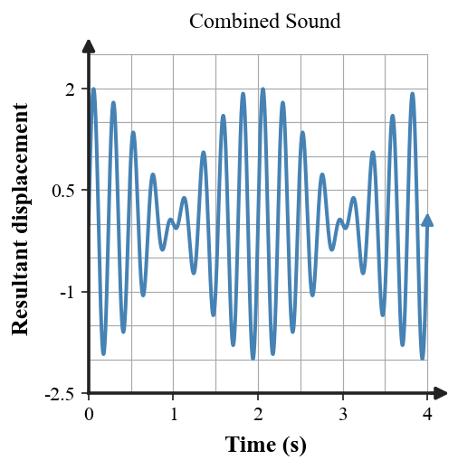
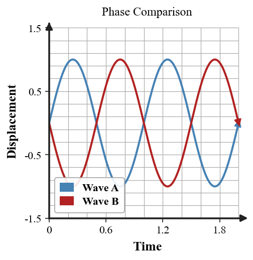

Practice focus: Analyze constructive/destructive sound interference, noise cancellation, beats, and beat frequency.
Observation card from the instrument-tuning station: If two tuning frequencies become closer together, state whether the beats become faster or slower. Use the physical evidence in the wording or visual.
Observation card from the instrument-tuning station: State when sound waves interfere destructively. Use the physical evidence in the wording or visual.
Observation card from the instrument-tuning station: Categorize alternating loud-soft pulses from two close notes as beats, echo, or resonance. Use the physical evidence in the wording or visual.
Observation card from the instrument-tuning station: Explain what physicists mean by beats in sound. Use the physical evidence in the wording or visual.
Observation card from the instrument-tuning station: Interpret the beat-pattern graph to identify the repeating change in overall amplitude. Use the physical evidence in the wording or visual.

Observation card from the instrument-tuning station: Explain what physicists mean by sound interference. Use the physical evidence in the wording or visual.
Observation card from the instrument-tuning station: Write the relationship used to calculate beat frequency. Use the physical evidence in the wording or visual.
Observation card from the instrument-tuning station: Identify the term that describes the technology that can use destructive interference to reduce unwanted sound. Use the physical evidence in the wording or visual.
Observation card from the instrument-tuning station: Categorize two equal and opposite sound-wave displacements meeting at one point as constructive or destructive interference. Use the physical evidence in the wording or visual.
Observation card from the instrument-tuning station: State when sound waves interfere constructively. Use the physical evidence in the wording or visual.
Observation card from the instrument-tuning station: If two tuning frequencies become equal, state what happens to the beat frequency. Use the physical evidence in the wording or visual.
Observation card from the instrument-tuning station: Predict what causes beats: two close frequencies or one steady frequency. Use the physical evidence in the wording or visual.
Applied problem from the instrument-tuning station: Two speakers emit the same tone. A listener moves from a loud spot to a quiet spot. Identify how interference can account for the difference. Include units or a labeled comparison when appropriate.
Applied problem from the instrument-tuning station: At one point two sound-wave displacements are +3 units and +2 units. Determine the resultant displacement and classify the interference at that instant. Include units or a labeled comparison when appropriate.
Applied problem from the instrument-tuning station: The beat pattern becomes slower as one string is adjusted. Explain what happens to the frequency difference. Include units or a labeled comparison when appropriate.
Applied problem from the instrument-tuning station: Interpret the phase-comparison graph to decide whether the two waves tend to reinforce or cancel when superposed. Include units or a labeled comparison when appropriate.

Applied problem from the instrument-tuning station: A classmate proposes canceling a 500 Hz tone with a 700 Hz tone of equal amplitude. Explain why frequency mismatch prevents stable strong cancellation. Include units or a labeled comparison when appropriate.
Applied problem from the instrument-tuning station: Two tuning forks have frequencies 512 Hz and 520 Hz. Calculate the beat frequency using $f_{beat}=|f_1-f_2|$. Include units or a labeled comparison when appropriate.
Applied problem from the instrument-tuning station: A pair of notes begins 8 Hz apart and is adjusted until it is 2 Hz apart. Compare the beat rates before and after tuning. Include units or a labeled comparison when appropriate.
Applied problem from the instrument-tuning station: At one point two sound-wave displacements are +4 units and -4 units. Determine the resultant displacement and identify the condition illustrated. Include units or a labeled comparison when appropriate.
Applied problem from the instrument-tuning station: Interpret the beat waveform graph to identify whether the rapid oscillation or the slow amplitude envelope corresponds to the beat pattern heard by a listener. Include units or a labeled comparison when appropriate.
Applied problem from the instrument-tuning station: A musician hears 8 beats each second between two notes. State what this tells you about the magnitude of their frequency difference. Include units or a labeled comparison when appropriate.
Applied problem from the instrument-tuning station: A tuning fork pair produces 5 beats/s. One fork is known to be 440 Hz. State the two possible frequencies of the other fork based only on beat frequency. Include units or a labeled comparison when appropriate.
Applied problem from the instrument-tuning station: A noise-canceling system creates a wave with the same frequency and similar amplitude but opposite phase. Explain the expected effect at the detector. Include units or a labeled comparison when appropriate.
Evidence check — instrument-tuning station: Two speakers play the same tone. Some locations are louder and others quieter. Explain how path-dependent phase differences create an interference pattern. Use the representation or scenario as evidence.
Evidence check — instrument-tuning station: A musician hears faster beats after adjusting a string and concludes the strings are closer in frequency. Critique the conclusion and correct it. Use the representation or scenario as evidence.
Evidence check — instrument-tuning station: A classmate says noise-canceling headphones “destroy sound energy.” Critique the claim using destructive interference, superposition, and energy transfer. Use the representation or scenario as evidence.
Evidence check — instrument-tuning station: Two notes at 440 Hz and 444 Hz are played together. Explain why a listener hears a pulsing sound and connect the pulse rate to the frequency difference. Use the representation or scenario as evidence.
Investigation/design task — instrument-tuning station: A group designs noise-canceling headphones and says they work by producing an “opposite sound wave.” Explain precisely what opposite must mean, why timing and frequency matching matter, how destructive interference reduces detected sound, and one practical limitation. Include evidence, a prediction, and one limitation or check.
Investigation/design task — instrument-tuning station: A musician tunes an instrument by listening to beats. Build an evidence-based tuning procedure that explains what the beat rate measures, what happens as frequencies approach one another, how the musician recognizes a near match, and one ambiguity beat frequency alone cannot resolve. Include evidence, a prediction, and one limitation or check.